หน้าแรก / Normalization
🧮 Normalization — เดินครบทุก NF พร้อมตารางก่อน–หลังทุกขั้น
📝 ข้อสอบปีนี้ออก 4 ข้อ (40 คะแนน) — หน้านี้เดินให้ดูทุกขั้นแบบ "ตารางก่อน → ตารางหลัง"
โจทย์จะให้ตารางมาแล้วให้ตอบว่า ผิด NF ไหน เพราะอะไร และสปลิตยังไง หน้านี้ใช้ตัวอย่างจริงของอาจารย์ (ตาราง SupplyPart จาก Live 0021) เดินครบทุกขั้น โดยแสดงตารางก่อนแปลง ตารางหลังแปลง และคำอธิบายว่าแต่ละคอลัมน์/แถวย้ายไปไหนเพราะอะไร
Normalization คืออะไร ทำไปทำไม
Normalization คือ กระบวนการวิเคราะห์และปรับปรุงโครงสร้างตาราง (Relation) โดยย่อย/สปลิต ตารางใหญ่ 1 ตาราง (Decomposition) ออกเป็นตารางย่อย ๆ ที่เชื่อมกันด้วย PK และ FK เพื่อ (1) ลดความซ้ำซ้อน (Minimum Redundancy) (2) กำจัด Anomalies — Insertion (เพิ่มไม่ได้) / Deletion (ลบแล้วข้อมูลอื่นหาย) / Update (แก้หลายจุด) (3) ให้ข้อมูลถูกต้อง 100%
🔍 เปรียบเทียบให้เห็นภาพ
ตารางที่ยังไม่ Normalize เหมือน กระเป๋าเป้ที่ยัดทุกอย่างรวมกัน — จะหยิบ/แก้อะไรก็ต้องรื้อทั้งกระเป๋า Normalization คือการแยกของใส่กระเป๋าตามประเภท แล้วเชื่อมกันด้วย "รหัส" (FK) แทนการพกของซ้ำ
แผนที่บันได Normal Form ทั้งหมด
flowchart TD UNF["🧾 UNF — ตารางดิบจากฟอร์ม/รายงาน
(ยังมีกลุ่มซ้ำ, เซลล์หลายค่า, ช่องว่าง)"] N1["1NF
ทุกเซลล์เป็นค่าเดียว (Atomic)
+ เติมข้อมูลซ้ำให้เต็ม + กำหนด PK"] N2["2NF
ตัด Partial Dependency
(Non-key ต้องขึ้นกับ PK ทั้งก้อน)"] N3["3NF
ตัด Transitive Dependency
(Non-key ห้ามกำหนด Non-key)"] NBC["BCNF — เข้มกว่า 3NF
Determinant ของทุก FD
ต้องเป็น Candidate Key"] N4["4NF
ตัด Multi-valued Dependency
(X →→ Y, X →→ Z ที่อิสระกัน)"] N5["5NF / PJNF
ตัด Join Dependency
(แตก 3 ตาราง JOIN กลับได้ตารางเดิม)"] UNF --> N1 --> N2 --> N3 --> NBC --> N4 --> N5
ภาพที่ 1: บันได Normalization — ขึ้นทีละขั้น ต้องผ่านขั้นล่างก่อนเสมอ
📚 ศัพท์เร่งด่วน 3 ตัว — ศัพท์อื่น ๆ มีกล่อง 📖 อธิบายแทรกตรงจุดที่ใช้ครั้งแรกทั่วทั้งหน้า
- PK = คีย์หลักระบุแถวไม่ซ้ำ • CK (Candidate Key) = คีย์คู่แข่งทุกตัวที่ระบุแถวได้แบบน้อยที่สุด • Non-key = คอลัมน์ที่ไม่ใช่คีย์ (ตัวปัญหาของทุก NF!)
- FD (X → Y) = Functional Dependency: รู้ค่า X 1 ค่า ระบุค่า Y ได้เพียงค่าเดียวเสมอ เช่น รู้รหัสพนักงาน → รู้ชื่อ
- Determinant = ฝั่งซ้ายของ FD (ตัว X ที่กำหนดค่า)
🎯 ตัวอย่างหลักของอาจารย์ (Live 0021): ตาราง SupplyPart — เดินครบ UNF → 3NF
อาจารย์ใช้โจทย์ "ข้อมูล SupplyPart (ตัวแทนจำหน่ายสินค้า ทำรายการสั่งซื้อให้)"
ตารางเดียวรวมข้อมูลซัพพลายเออร์ + สินค้า + รายการสั่งซื้อ:
R(S#, Sname, City, Status, P#, Pname, Color, Qty)
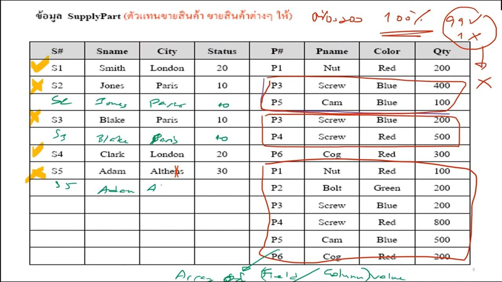
🔵 ขั้นที่ 1: UNF → 1NF (ทุกเซลล์ Atomic + เติมช่องว่างให้เต็ม)
📉 ตารางก่อนแปลง (UNF) — ตรงตามสไลด์อาจารย์
| S# | Sname | City | Status | P# | Pname | Color | Qty |
|---|---|---|---|---|---|---|---|
| S1 | Smith | London | 20 | P1 | Nut | Red | 200 |
| S2 | Jones | Paris | 10 | P3 | Screw | Blue | 400 |
| (ว่าง) | P5 | Cam | Blue | 100 | |||
| S3 | Blake | Paris | 10 | P3 | Screw | Blue | 200 |
| (ว่าง) | P4 | Screw | Red | 500 | |||
| S4 | Clark | London | 20 | P6 | Cog | Red | 300 |
| S5 | Adam | Athens | 30 | P1 | Nut | Red | 100 |
| (ว่าง) | P2 | Bolt | Green | 200 | |||
| (ว่าง) | P3 | Screw | Blue | 200 | |||
| (ว่าง) | P4 | Screw | Red | 800 | |||
| (ว่าง) | P5 | Cam | Blue | 500 | |||
| (ว่าง) | P6 | Cog | Red | 200 |
❌ ปัญหาของตารางนี้ (ยังไม่ผ่าน 1NF)
- Repeating Group: ซัพพลายเออร์ 1 คนสั่งได้หลายสินค้า ทำให้เกิด "กลุ่มแถว" — แถวของ P5/P4/P2–P6 มีช่องซัพพลายเออร์ว่างลอย ไม่รู้ว่าเป็นสั่งของใคร
- แถวไม่เป็นอิสระ: แถว P5 Cam ต้องอาศัยอ่าน "แถวบน" ประกอบ จึงจะรู้ว่าเป็นของ S2 — ผิดหลักตาราง (แต่ละแถวต้องยืนเดี่ยวได้)
- ไม่มี PK: ยังระบุแถวด้วยคอลัมน์ใดคอลัมน์เดียวไม่ได้เลย
📖 ศัพท์: Repeating Group — อ่านว่า "รีพีตติง กรุ๊ป (กลุ่มซ้ำ)"
ความหมาย: กลุ่มแถวที่มาจาก "รายการจริง 1 รายการ แต่มีหลายบรรทัดย่อย" ทำให้ช่องบางช่องต้องว่างลอย — เป็นสัญญาณอันดับแรกว่าตารางยังไม่ผ่าน 1NF
ตัวอย่างจากตาราง SupplyPart: S2 สั่งสินค้า 2 รายการ → แถว P5 Cam ต้องเป็นของ S2 แต่ช่อง S#/Sname/City กลับว่างลอย
📖 ศัพท์: Atomic Value — อ่านว่า "อะตอมมิก (ค่าอะตอม)"
ความหมาย: ค่าที่แยกย่อยไม่ได้อีก — 1 ช่อง = 1 ค่า ห้ามยัดหลายค่า เช่น ห้ามเขียน "P3, P5" ในช่องเดียว
ตัวอย่างจากตาราง SupplyPart: ช่อง City = "Paris" ค่าเดียวจบ = Atomic ✅
📈 ตารางหลังแปลง (1NF) — เติมข้อมูลซ้ำลงทุกช่องว่าง
| S# 🔑 | Sname | City | Status | P# 🔑 | Pname | Color | Qty |
|---|---|---|---|---|---|---|---|
| S1 | Smith | London | 20 | P1 | Nut | Red | 200 |
| S2 | Jones | Paris | 10 | P3 | Screw | Blue | 400 |
| S2 | Jones | Paris | 10 | P5 | Cam | Blue | 100 |
| S3 | Blake | Paris | 10 | P3 | Screw | Blue | 200 |
| S3 | Blake | Paris | 10 | P4 | Screw | Red | 500 |
| S4 | Clark | London | 20 | P6 | Cog | Red | 300 |
| S5 | Adam | Athens | 30 | P1 | Nut | Red | 100 |
| S5 | Adam | Athens | 30 | P2 | Bolt | Green | 200 |
| S5 | Adam | Athens | 30 | P3 | Screw | Blue | 200 |
| S5 | Adam | Athens | 30 | P4 | Screw | Red | 800 |
| S5 | Adam | Athens | 30 | P5 | Cam | Blue | 500 |
| S5 | Adam | Athens | 30 | P6 | Cog | Red | 200 |
แถวสีเขียว = ช่องที่เดิมว่าง ถูก "เติมข้อมูลซ้ำของซัพพลายเออร์คนเดียวกัน" ลงไป (ตรงปากกาเขียวในสไลด์อาจารย์)
✅ เปลี่ยนไปยังไง — สรุปการแปลง UNF → 1NF
- เติมข้อมูลซ้ำลงช่องว่าง — ไล่จริงทีละแถว: แถว "P5, Cam, Blue, 100" ที่ช่องซัพพลายเออร์ว่าง → เติม "S2, Jones, Paris, 10" ลงไป (เพราะอยู่กลุ่มเดียวกับ S2 แถวบน) • แถว "P4, Screw, Red, 500" → เติม "S3, Blake, Paris, 10" • แถว P2–P6 ทั้ง 6 แถว → เติม "S5, Adam, Athens, 30" ทั้งหมด — ตอนนี้ทุกแถวยืนเดี่ยวได้ ไม่ต้องอาศัยแถวบนแล้ว
- ทุกเซลล์เป็น Atomic — ตรวจทีละช่อง: ไม่มีช่องไหนยัดหลายค่า (เช่น ไม่มี "P3, P5" ในช่องเดียว) ✅
- กำหนด PK = (S#, P#) — พิสูจน์ด้วยข้อมูล: S# เดี่ยว ๆ ซ้ำ (S2 โผล่ 2 แถว, S5 โผล่ 6 แถว) → ระบุแถวไม่ได้ • P# เดี่ยว ๆ ก็ซ้ำ (P3 โผล่ 3 แถว) → ก็ไม่ได้ • แต่คู่ (S2,P3), (S2,P5), (S3,P3)... ไม่มีคู่ไหนซ้ำเลย → (S#, P#) ระบุแถวได้พอดี = PK
⚠️ ข้อสังเกต: 1NF ยังไม่ลดความซ้ำ — นับจริงในตาราง: "S2, Jones, Paris, 10" ซ้ำ 2 แถว, "S5, Adam, Athens, 30" ซ้ำ 6 แถว, "P3, Screw, Blue" ซ้ำ 3 แถว — แก้ชื่อ Jones ต้องแก้ 2 จุด, เพิ่มสินค้าใหม่ก็เพิ่มไม่ได้เพราะต้องมีคนสั่งก่อน — ความซ้ำพวกนี้คือสาเหตุที่ต้องไปต่อ 2NF
📖 ศัพท์: Primary Key (PK) / Composite Key — อ่านว่า "พรายมารี คีย์ / คีย์ผสม"
ความหมาย: PK = คอลัมน์(หรือกลุ่มคอลัมน์)ที่ระบุแถวได้ไม่ซ้ำ ห้ามว่าง — Composite Key คือ PK ที่ต้องใช้ 2 คอลัมน์ขึ้นไปประกอบกัน ถึงจะระบุแถวได้
ตัวอย่างจากตาราง SupplyPart: S# เดี่ยว ๆ ซ้ำ (S2, S5 โผล่หลายแถว), P# เดี่ยว ๆ ก็ซ้ำ (P3 โผล่ 3 แถว) → ต้องใช้ (S#, P#) คู่กันถึงระบุแถวได้พอดี
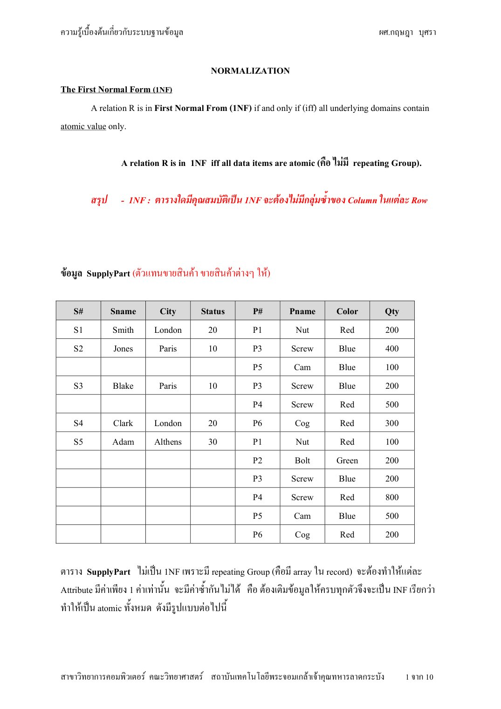
🟣 ขั้นที่ 2: 1NF → 2NF (ตัด Partial Dependency)
ตารางก่อนแปลง = ตาราง 1NF ด้านบน (12 แถวรวมกันในตารางเดียว) ขั้นนี้ไม่ได้เปลี่ยนข้อมูล แต่วิเคราะห์ FD แล้วสปลิตตาราง
🔍 วิเคราะห์ FD ทั้งหมดของตาราง 1NF
📖 ศัพท์: FD (Functional Dependency) — อ่านว่า "เอฟ-ดี (ฟังก์ชันนัล ดีเพนเดนซี)"
ความหมาย: ความสัมพันธ์แบบ "รู้ฝั่งซ้าย = รู้ฝั่งขวาทันทีเสมอ" เขียนว่า X → Y (อ่านว่า X กำหนด Y) — ดังนั้นคำว่า "วิเคราะห์ FD" คือ การไล่หาคู่แบบนี้ให้ครบทุกคอลัมน์ โดยเทียบจากข้อมูลจริงในตาราง
ตัวอย่างจากตาราง SupplyPart: รู้ S# = S1 → รู้ทันทีว่า Sname = Smith (ทุกแถวที่ S#=S1 ชื่อเดิมเสมอ) = มี FD ว่า S# → Sname
📖 ศัพท์: Determinant — อ่านว่า "ดีเทอร์มิแนนต์ (ตัวกำหนดค่า)"
ความหมาย: ฝั่งซ้ายของ FD — ใน X → Y ตัว X นั่นแหละคือ Determinant (เวลาอาจารย์พูด "สปลิตตาม Determinant" หมายถึง ให้แยกตารางโดยยึดฝั่งซ้ายของ FD เป็นหลัก)
ตัวอย่างจากตาราง SupplyPart: ใน S# → Sname, Determinant คือ S#
flowchart LR
SP(("(S#, P#)
Pk คีย์ผสม")) -->|"FFD ✅
รู้ทั้งคู่ถึงรู้ Qty"| QTY["Qty"]
S["S#
(ส่วนเดียวของ PK)"] -.->|"Partial ❌"| SG["Sname, City, Status"]
P["P#
(ส่วนเดียวของ PK)"] -.->|"Partial ❌"| PG["Pname, Color"]
ภาพที่ 2: FD ของตาราง 1NF — ไล่ถามทีละ Non-key ว่า "รู้แค่ส่วนเดียวของ PK ก็รู้ค่านี้ไหม?"
🧠 ไล่ FD จริงด้วยข้อมูลในตาราง — ใช้กฎเดียว: "เทียบแถวที่ค่าฝั่งซ้ายเท่ากัน"
กฎ: มองหาแถวที่มีค่าฝั่งซ้าย (X) เท่ากัน — ถ้าฝั่งขวา (Y) เท่ากันทุกแถว = มี FD X → Y ✅ • ถ้าเจอแม้แต่คู่เดียวที่ X เท่ากันแต่ Y ต่าง = ไม่มี FD ❌
① ทดสอบ S# → Sname, City, Status — มองแถวที่ S# ซ้ำกัน:
- S# = S2 มี 2 แถว: Sname = Jones, Paris, 10 เหมือนกันทั้งคู่ ✓
- S# = S5 มี 6 แถว: Sname = Adam, Athens, 30 ทุกแถว ✓
- → รู้ S# = รู้ทั้งสามค่าทันที → มี FD จริง ❌ แต่เป็น Partial (รู้แค่ "ครึ่งเดียว" ของ PK ก็รู้แล้ว)
② ทดสอบ P# → Pname, Color — มองแถวที่ P# ซ้ำกัน:
- P# = P3 มี 3 แถว: Screw / Blue เหมือนกันทั้ง 3 ✓ → มี FD จริง ❌ Partial เช่นกัน
③ ทดสอบ Qty — รู้แค่ตัวเดียวพอไหม? ใช้กฎเดียวกัน:
- รู้แค่ P#? ดูแถวที่ P# = P3 ทั้ง 3 แถว: Qty = 400, 200, 200 → ไม่เท่ากัน! → รู้ P# อย่างเดียวเดา Qty ไม่ได้ ❌
- รู้แค่ S#? ดูแถวที่ S# = S5 ทั้ง 6 แถว: Qty = 100, 200, 200, 800, 500, 200 → ไม่เท่ากัน! → รู้ S# อย่างเดียวก็เดาไม่ได้ ❌
- รู้ "คู่" (S#, P#) ล่ะ? แต่ละคู่มีแถวเดียวพอดี (ไม่มีคู่ไหนซ้ำกัน) → รู้คู่ = รู้ Qty เสมอ ✅
→ สรุป: (S#, P#) → Qty ขึ้นกับ PK ทั้งก้อน = FFD ✅ • ส่วน S# → Sname กับ P# → Pname ขึ้นกับแค่ "บางส่วน" = Partial ❌ — นี่แหละคือเหตุผลที่ต้องสปลิตเป็น 2NF ตอนถัดไป
📖 ศัพท์: FFD (Full Functional Dependency) — อ่านว่า "เอฟเอฟดี (การขึ้นกันแบบสมบูรณ์)"
ความหมาย: Non-key ที่ขึ้นกับ PK "ทั้งก้อน" — เอาส่วนใดส่วนหนึ่งของ PK ออกแล้วรู้ค่าไม่ได้อีกเลย นี่คือแบบที่ถูกต้อง ไม่ต้องแก้อะไร
ตัวอย่างจากตาราง SupplyPart: Qty: (S1,P1)=200 แต่ (S5,P1)=100 → รู้แค่ S# หรือแค่ P# ไม่พอ ต้องรู้ทั้งคู่ = FFD ✅
📖 ศัพท์: Partial Dependency — อ่านว่า "พาร์เชียล ดีเพนเดนซี (การขึ้นกันบางส่วน)"
ความหมาย: เมื่อ PK เป็นคีย์ผสม แล้วมี Non-key ที่ขึ้นกับ PK เพียง "บางส่วน" (รู้แค่ครึ่งเดียวของ PK ก็รู้ค่านั้นแล้ว) — นี่คือสิ่งที่ 2NF สั่งห้าม
ตัวอย่างจากตาราง SupplyPart: S# → Sname: รู้แค่ S# (ครึ่งเดียวของ PK) ก็รู้ Sname แล้ว = Partial ❌
แก้: สปลิตตาม Determinant — กลุ่ม FD ไหนขึ้นกับใคร ก็ไปอยู่ตารางของมัน
flowchart TD R["ตาราง 1NF(S#, Sname, City, Status, P#, Pname, Color, Qty)
PK = (S#, P#) — 12 แถว"] R --> S2["S_2NF(S#, Sname, City, Status)
PK: S# — 5 แถว
เพราะ S# → Sname, City, Status"] R --> P2["P_2NF(P#, Pname, Color)
PK: P# — 6 แถว
เพราะ P# → Pname, Color"] R --> SP2["SP_2NF(S#, P#, Qty)
PK: (S#, P#) — 12 แถว
เพราะ (S#, P#) → Qty"]
ภาพที่ 3: ต้นไม้การสปลิต 2NF — 1 ตารางใหญ่กลายเป็น 3 ตารางย่อย
📖 ศัพท์: Decomposition — อ่านว่า "ดีคอมโพซิชัน (การแยกตาราง)"
ความหมาย: การสปลิตตารางใหญ่ 1 ตารางออกเป็นหลายตารางย่อยที่เชื่อมกันด้วย FK — เงื่อนไขเดียวที่ห้ามลืม: ต้อง Lossless (JOIN กลับแล้วได้ข้อมูลเดิมครบ 100% ไม่หาย ไม่เกิน)
ตัวอย่างจากตาราง SupplyPart: การแยก 2NF ข้างบน: 1 ตาราง → 3 ตาราง ข้อมูลครบทุกคอลัมน์ ไม่มีอะไรหาย
📈 ตารางหลังแปลง (2NF) — 3 ตาราง
ตารางที่ 1: S_2NF — คอลัมน์ที่ขึ้นกับ S# (Sname, City, Status) ย้ายมาอยู่กับ S# และตัดแถวซ้ำทิ้ง (Jones เคยซ้ำ 2 แถว เหลือ 1)
| S# 🔑 | Sname | City | Status |
|---|---|---|---|
| S1 | Smith | London | 20 |
| S2 | Jones | Paris | 10 |
| S3 | Blake | Paris | 10 |
| S4 | Clark | London | 20 |
| S5 | Adam | Athens | 30 |
ตารางที่ 2: P_2NF — คอลัมน์ที่ขึ้นกับ P# (Pname, Color) ย้ายมาอยู่กับ P# และตัดแถวซ้ำทิ้ง (P3 เคยซ้ำ 3 แถว เหลือ 1)
| P# 🔑 | Pname | Color |
|---|---|---|
| P1 | Nut | Red |
| P2 | Bolt | Green |
| P3 | Screw | Blue |
| P4 | Screw | Red |
| P5 | Cam | Blue |
| P6 | Cog | Red |
ตารางที่ 3: SP_2NF — เหลือเฉพาะคีย์ผสม + Qty (ข้อมูลที่ต้องรู้ทั้งคู่จึงรู้) — 12 แถวเท่าเดิมเพราะทุกแถวคือ 1 รายการสั่งซื้อจริง
| S# 🔑 | P# 🔑 | Qty |
|---|---|---|
| S1 | P1 | 200 |
| S2 | P3 | 400 |
| S2 | P5 | 100 |
| S3 | P3 | 200 |
| S3 | P4 | 500 |
| S4 | P6 | 300 |
| S5 | P1 | 100 |
| S5 | P2 | 200 |
| S5 | P3 | 200 |
| S5 | P4 | 800 |
| S5 | P5 | 500 |
| S5 | P6 | 200 |
✅ เปลี่ยนไปยังไง — สรุปการแปลง 1NF → 2NF
- ไม่มีข้อมูลหาย: คอลัมน์ทั้ง 8 ตัวถูกกระจายไป 3 ตารางครบ (S# ปรากฏทั้ง S_2NF และ SP_2NF เพราะเป็นคีย์ข้าง)
- แถวซ้ำถูกตัด: ข้อมูล Jones ที่เคยพิมพ์ซ้ำทุกครั้งที่สั่งของ ตอนนี้เหลือ 1 แถวใน S_2NF — แก้ชื่อจุดเดียวจบ (แก้ Update Anomaly)
- เพิ่มของใหม่ได้แล้ว: สินค้าใหม่ที่ยังไม่มีใครสั่ง เพิ่มใน P_2NF ได้เลย (แก้ Insertion Anomaly)
- แต่ยังไม่จบ! ใน S_2NF ยังมีความซ้ำแฝง: London/20 ซ้ำ 2 แถว, Paris/10 ซ้ำ 2 แถว — นี่คือเบาะแสของขั้น 3NF
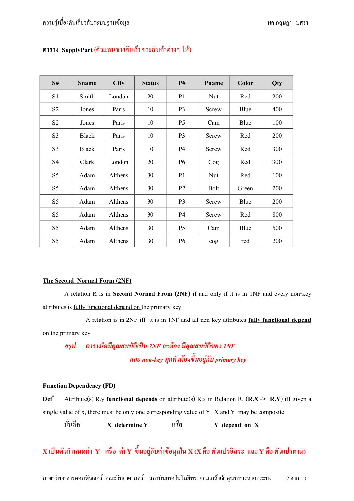
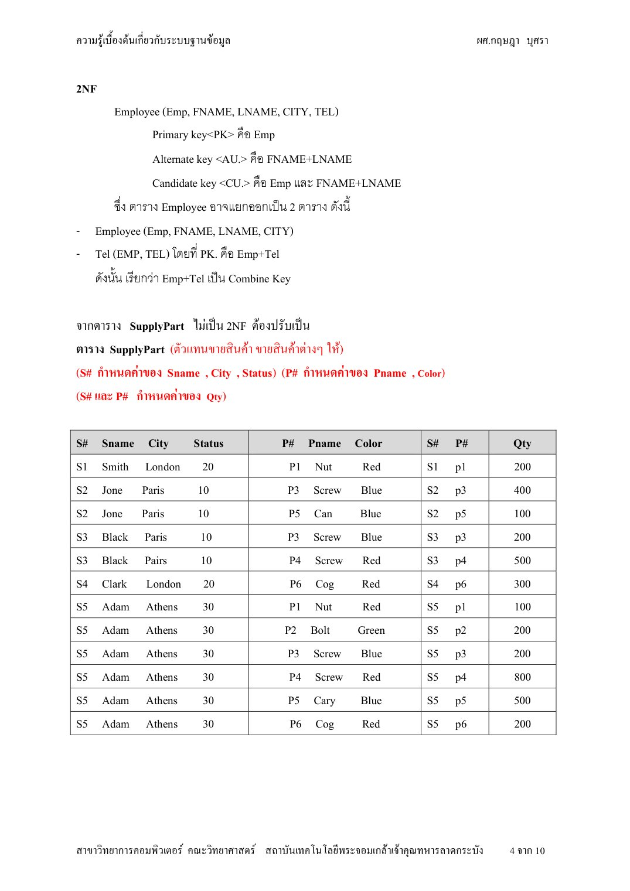
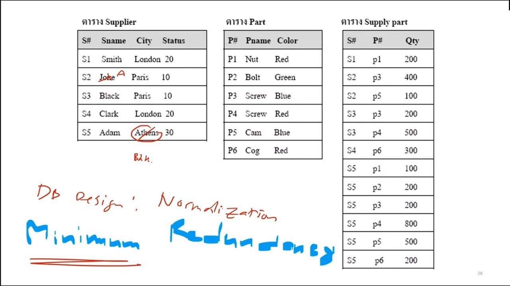
🟠 ขั้นที่ 3: 2NF → 3NF (ตัด Transitive Dependency)
ตารางก่อนแปลง = S_2NF(S#, Sname, City, Status) — 5 แถว (P_2NF และ SP_2NF ไม่มีปัญหา ไม่ต้องแตะ)
🔍 วิเคราะห์: เจอสายโซ่ Transitive
flowchart LR S2["S_2NF(S#, Sname, City, Status)
พบสายโซ่ S# → City → Status ❌"] S2 --> S3["S(S#, Sname, City)
PK: S# • FK: City →"] S2 --> C3["City_Status(City, Status)
PK: City"]
ภาพที่ 4: สปลิต 3NF — ดึงคู่ City/Status ออกไปตั้งตารางใหม่
🧠 หา Transitive ด้วยข้อมูลจริง (เห็นจากตารางเลย)
ดูตาราง S_2NF แล้วจัดกลุ่มตาม City — จะเห็นว่า City ตัวเดียวกัน = Status ตัวเดียวกันเสมอ:
| City | แถวที่ปรากฏ | Status ที่พบ |
|---|---|---|
| London | S1, S4 | 20 ทั้งคู่ ✓ |
| Paris | S2, S3 | 10 ทั้งคู่ ✓ |
| Athens | S5 | 30 |
แปลว่า City → Status (รู้เมือง = รู้สถานะ ไม่ต้องรู้รหัสพนักงาน) — เกิดสายโซ่ S# → City → Status
โดยที่ City และ Status เป็น Non-key ทั้งคู่ = Transitive Dependency ❌
ทดสอบว่าเกิดปัญหาจริง: ถ้าโจทย์บอก "Paris เปลี่ยน Status เป็น 15" — ตารางนี้มี Paris อยู่ 2 แถว ต้องแก้ทั้ง 2 จุด ลืมจุดเดียวข้อมูลขัดแย้งทันที (S2 บอก 15 แต่ S3 บอก 10) — นี่คือ Update Anomaly ที่ยังค้างอยู่
📖 ศัพท์: Transitive Dependency — อ่านว่า "ทรานซิทีฟ ดีเพนเดนซี (การขึ้นกันเชิงส่งผ่าน)"
ความหมาย: Non-key กำหนดค่าให้ Non-key อีกตัว — เกิด "สายโซ่" X → Y → Z โดย X = PK แต่ Y และ Z เป็น Non-key ทั้งคู่ — นี่คือสิ่งที่ 3NF สั่งห้าม
ตัวอย่างจากตาราง SupplyPart: S# → City → Status: รู้ City = "Paris" ก็รู้ Status = 10 ทันที โดยไม่ต้องรู้ S#
📈 ตารางหลังแปลง (3NF) — S ถูกแบ่งเป็น 2 ตาราง
ตารางใหม่ที่ 1: S — เหมือน S_2NF แต่หักคอลัมน์ Status ออก (เพราะ Status ย้ายไปอยู่กับ City แล้ว) และ City กลายเป็น FK
| S# 🔑 | Sname | City 🔗FK |
|---|---|---|
| S1 | Smith | London |
| S2 | Jones | Paris |
| S3 | Blake | Paris |
| S4 | Clark | London |
| S5 | Adam | Athens |
ตารางใหม่ที่ 2: City_Status — คู่ City/Status ที่ถูกดึงออกมา ตัดแถวซ้ำทิ้ง (London เคยซ้ำ 2 → เหลือ 1)
| City 🔑 | Status |
|---|---|
| London | 20 |
| Paris | 10 |
| Athens | 30 |
P และ SP — ค้างจาก 2NF ได้เลย (ไม่มี Transitive: Pname/Color ขึ้นกับ P# โดยตรง, Qty ขึ้นกับคีย์ผสมโดยตรง)
✅ เปลี่ยนไปยังไง — สรุปการแปลง 2NF → 3NF
- สิ่งที่ย้าย — ไล่จริง: คอลัมน์ Status ถูก "หัก" ออกจาก S (เหลือ S#, Sname, City) • คู่ City+Status ย้ายไปรวมกันในตารางใหม่ City_Status โดย City ที่เคยซ้ำ (London 2 แถว, Paris 2 แถว) ถูกยุบเหลือแถวเดียว — เหลือ 3 แถว: (London,20), (Paris,10), (Athens,30)
- สิ่งที่ได้ — ทดสอบด้วยสถานการณ์เดิม: "Paris เปลี่ยน Status เป็น 15" → แก้ 1 แถวใน City_Status จบ (เดิมใน S_2NF ต้องแก้ 2 จุดและเสี่ยงขัดแย้ง)
- เพิ่มเมืองใหม่ได้: เมือง "Bangkok 40" ที่ยังไม่มีซัพพลายเออร์ เพิ่มใน City_Status ได้เลย (เดิมต้องรอมีคนสังกัดก่อน = Insertion Anomaly)
- จำนวนตารางรวม: S • City_Status • P • SP = 4 ตาราง — ผลลัพธ์สุดท้ายของ Live 0021
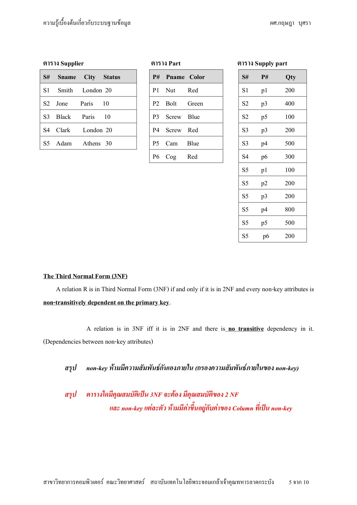
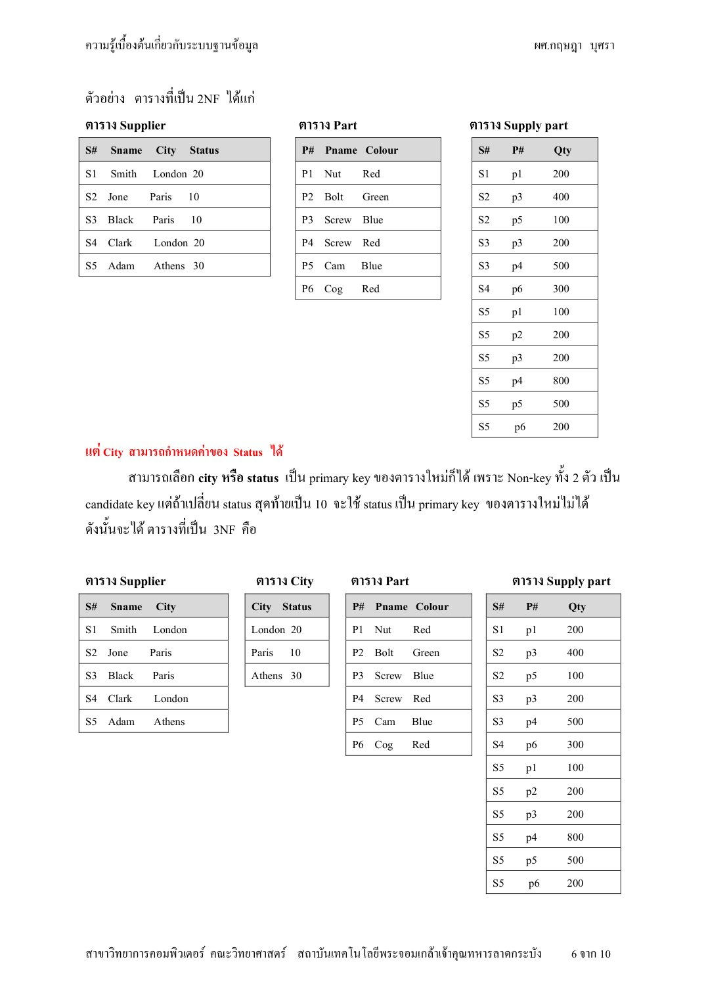
flowchart LR
st(("Status")) -.- CITY["CITY_STATUS
(City, Status)"]
CITY ---|1| LV{"ตั้งอยู่"}
LV ---|N| S["S
(S#, Sname, City)"]
S ---|M| OD{"สั่งซื้อ"}
OD ---|N| P["P
(P#, Pname, Color)"]
qty(("Qty")) -.- OD
ภาพที่ 5 (Chen Model): ผลลัพธ์สุดท้าย — SP ไม่ใช่ตารางลอย ๆ แต่คือ "ความสัมพันธ์ สั่งซื้อ M:N" ระหว่าง S กับ P ที่มี Attribute Qty แขวนอยู่ (ตามแบบที่อาจารย์สอน)
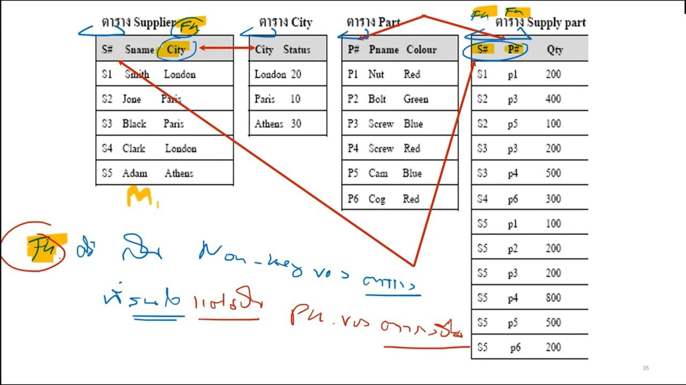
🔴 BCNF — ตัวอย่างอาจารย์ (Live 0022): ตาราง Advisor
BCNF = 3NF ที่เข้มขึ้น: ฝั่งซ้าย (Determinant) ของทุก FD ต้องเป็น Candidate Key เท่านั้น — กรณีทั่วไปหลังทำ 3NF จบแล้วมักผ่าน BCNF อัตโนมัติ (เช่น 4 ตาราง SupplyPart ด้านบนผ่านหมด) แต่ถ้าโจทย์มี FD แปลก ๆ ที่ Determinant ไม่ใช่คีย์ ก็จะไม่ผ่าน — ตัวอย่างคือตาราง Advisor
ตาราง Advisor(Student_ID, Subject, Advisor_Name) — เงื่อนไขธุรกิจ: นิสิต 1 คนเรียนได้หลายวิชา,
วิชาหนึ่งมีอาจารย์ที่ปรึกษาได้หลายคน, อาจารย์ 1 คนเป็นที่ปรึกษาได้วิชาเดียว
📉 ตารางก่อนแปลง (ผ่าน 3NF แล้ว แต่ยังไม่ผ่าน BCNF)
| Student_ID 🔑 | Subject 🔑 | Advisor_Name |
|---|---|---|
| 6501001 | Database | อ.เอ |
| 6501001 | OS | อ.บี |
| 6501002 | Database | อ.ค |
🧠 ไล่ FD + CK ให้ครบก่อนตัดสิน (สูตร BCNF)
- พิสูจน์ CK ที่ 1 = (Student_ID, Subject): ดูข้อมูล — (6501001, Database), (6501001, OS), (6501002, Database) ไม่มีคู่ไหนซ้ำ → ระบุแถวได้ ✅
- พิสูจน์ CK ที่ 2 = (Student_ID, Advisor_Name): (6501001, อ.เอ), (6501001, อ.บี), (6501002, อ.ค) ก็ไม่ซ้ำเช่นกัน ✅ → เลือก PK = (Student_ID, Subject)
- FD ที่เจอจากข้อมูล: ดู Advisor_Name ทุกแถว — อ.เอ โผล่แค่กับ Database, อ.บี แค่กับ OS, อ.ค แค่กับ Database → อาจารย์ 1 คน = วิชาเดียวเสมอ =
Advisor_Name → Subject - 3NF ยอมรับ: Subject เป็น "ส่วนหนึ่งของ CK" (prime attribute) จึงยังผ่าน 3NF
BCNF ไม่ยอม: Advisor_Name คือ Determinant แต่ไม่ใช่ CK ทั้งตัว → ไม่ผ่าน BCNF ❌
📖 ศัพท์: Prime Attribute — อ่านว่า "ไพรม์ แอตทริบิวต์" (คอลัมน์สำคัญ)
ความหมาย: คอลัมน์ที่เป็น "ส่วนหนึ่งของ Candidate Key ใด ๆ" — ตัวตัดสิน 3NF vs BCNF: 3NF ยอมให้ Determinant ไม่ใช่ CK ได้ เฉพาะเมื่อ ฝั่งที่ถูกกำหนด (Y) เป็น Prime Attribute
ตัวอย่างจากตาราง Advisor: Subject เป็นส่วนหนึ่งของ CK (Student_ID, Subject) = Prime → 3NF จึงยอม FD: Advisor_Name → Subject ได้
📈 ตารางหลังแปลง (BCNF) — แยกฝั่ง Determinant ออกไปตั้งตารางใหม่
ตารางที่ 1: Advisor_Subject — เอา FD ที่มีปัญหา (Advisor_Name → Subject) ไปตั้งตารางใหม่ โดย Advisor_Name กลายเป็น PK (ผ่าน BCNF ทันทีเพราะเป็นคีย์ของตัวเอง)
| Advisor_Name 🔑 | Subject |
|---|---|
| อ.เอ | Database |
| อ.บี | OS |
| อ.ค | Database |
ตารางที่ 2: Student_Advisor — เก็บความสัมพันธ์ "นิสิตคนไหนมีที่ปรึกษาคนไหน" (คีย์ผสมเดิม แต่เอา Subject ออก)
| Student_ID 🔑 | Advisor_Name 🔑🔗FK |
|---|---|
| 6501001 | อ.เอ |
| 6501001 | อ.บี |
| 6501002 | อ.ค |
✅ เปลี่ยนไปยังไง — สรุปการแปลง 3NF → BCNF
- สิ่งที่ย้าย: คู่ Subject ย้ายไปอยู่กับ Determinant ของมัน (Advisor_Name) — ตรงข้ามกับ 3NF ที่ "ถูกกำหนด" ย้ายไปอยู่กับ Determinant เหมือนกัน แต่ครั้งนี้ Subject เป็นส่วนหนึ่งของ PK เดิม จึงต้องเอาออกจากคีย์ผสมด้วย
- ข้อมูลไม่หาย: นิสิต 6501001 มีอ.เอ (Database) ยังตามได้จาก 2 ตาราง: Student_Advisor บอกว่า 6501001 → อ.เอ แล้ว Advisor_Subject บอกว่า อ.เอ → Database
- ข้อสังเกต: ทั้ง 2 ตารางมีจำนวนแถวเท่าตารางเดิม (3 แถว) — BCNF ไม่ได้ลดแถว แต่แยก "ข้อมูลอิสระ" (อาจารย์สอนวิชาอะไร) ออกจาก "ข้อมูลความสัมพันธ์" (ใครมีที่ปรึกษาคนไหน)
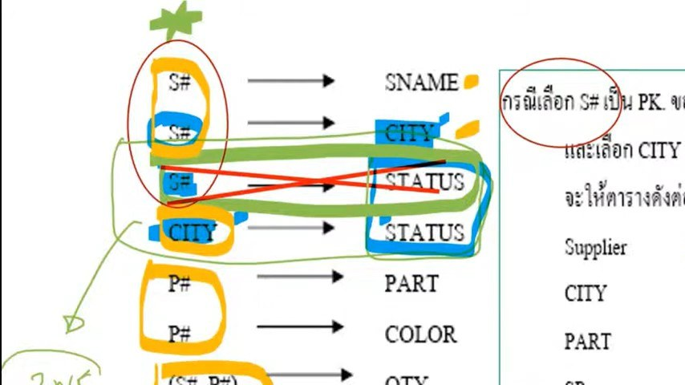
🎬 วิดีโอต้นฉบับ: Live 0022 [BCNF]
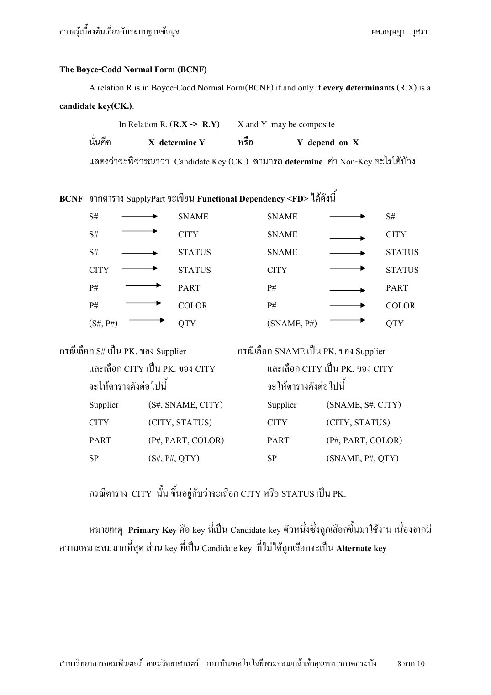
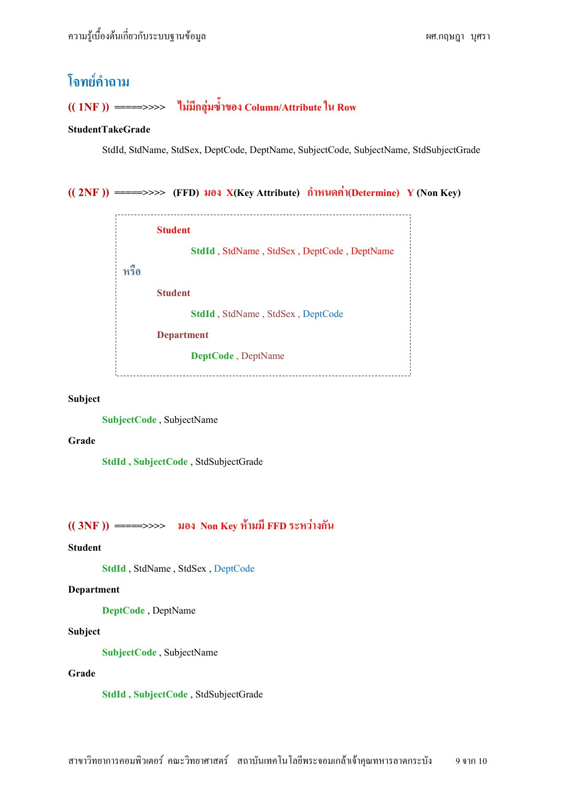
🧠 3NF vs BCNF ในหนึ่งบรรทัด (ออกถามความต่างบ่อยมาก)
3NF: ยอมให้ X→Y โดย X ไม่ใช่ CK ได้ ถ้า Y เป็นส่วนหนึ่งของ Candidate Key
BCNF: ห้ามเด็ดขาด — ดังนั้น ผ่าน BCNF = ผ่าน 3NF เสมอ แต่ย้อนกลับไม่จริง
🟠 4NF — ตัวอย่างอาจารย์ (Live 0023): ตาราง CTX
4NF = BCNF + ไม่มี Multi-valued Dependency (MVD) ที่ไม่จำเป็น — MVD (X →→ Y) คือ รู้ X 1 ค่า ได้เซตของ Y หลายค่า โดย Y เป็นอิสระจากคอลัมน์อื่น (Z) ในตารางโดยสิ้นเชิง
ตาราง CTX(Course, Teacher, Text_Book) — วิชาหนึ่งมีอาจารย์สอนหลายคน และมีหนังสือแนะนำหลายเล่ม
อาจารย์กับหนังสือไม่เกี่ยวข้องกันเอง (อาจารย์ท่านไหนก็ใช้หนังสือได้ทุกเล่ม)
📉 ตารางก่อนแปลง (ผ่าน BCNF แล้ว — แต่ยังไม่ผ่าน 4NF)
| Course 🔑 | Teacher 🔑 | Text_Book 🔑 |
|---|---|---|
| Physics | Green | Basic Physics |
| Physics | Green | University Physics |
| Physics | Brown | Basic Physics |
| Physics | Brown | University Physics |
❌ ปัญหา: ตารางเป็น "ผลคูณทุกคู่" (Cartesian Product)
ไล่จากข้อมูลจริง: วิชา Physics มี อาจารย์ 2 คน (Green, Brown) และ หนังสือ 2 เล่ม (Basic, University Physics)
— ในตารางต้องมีครบทุกคู่: (Green, Basic), (Green, University), (Brown, Basic), (Brown, University) = 2 × 2 = 4 แถวเป๊ะ ๆ
ลองเพิ่มของใหม่: เพิ่มหนังสือ 1 เล่ม = ต้องเพิ่ม 2 แถว (Green + Brown) • เพิ่มอาจารย์ 1 คน = ต้องเพิ่ม 3 แถว (ต่อหนังสือทุกเล่ม) — ยิ่งข้อมูลเยอะยิ่งบวม
นี่คือ MVD: Course →→ Teacher และ Course →→ Text_Book ที่อิสระกันโดยสิ้นเชิง (อาจารย์ท่านไหนก็ใช้หนังสือเล่มไหนก็ได้ ไม่มีกฎห้าม)
📖 ศัพท์: MVD (Multivalued Dependency) — อ่านว่า "เอ็มวีดี (การขึ้นกันหลายค่า)"
ความหมาย: รู้ X 1 ค่า ได้"เซตของ Y หลายค่า" เขียน X →→ Y (ลูกศรสองหัว) — และ Y ต้องเป็นอิสระจากคอลัมน์อื่น (Z) โดยสิ้นเชิง ถ้า Y กับ Z เกี่ยวกัน = ไม่ใช่ MVD — นี่คือสิ่งที่ 4NF สั่งห้าม
ตัวอย่างจากตาราง SupplyPart: Course = Physics → อาจารย์ {Green, Brown} และหนังสือ {Basic, University} ครบทุกคู่ 2×2 = 4 แถว = MVD
📈 ตารางหลังแปลง (4NF) — แยก 2 กลุ่มที่อิสระกันออกจากกัน
ตารางที่ 1: Course_Teacher — เหลือเฉพาะ "วิชา ↔ อาจารย์" (จาก 4 แถว เหลือ 2)
| Course 🔑 | Teacher 🔑 |
|---|---|
| Physics | Green |
| Physics | Brown |
ตารางที่ 2: Course_Book — เหลือเฉพาะ "วิชา ↔ หนังสือ" (จาก 4 แถว เหลือ 2)
| Course 🔑 | Text_Book 🔑 |
|---|---|
| Physics | Basic Physics |
| Physics | University Physics |
✅ เปลี่ยนไปยังไง — สรุปการแปลง BCNF → 4NF
- สิ่งที่ย้าย: Teacher กับ Text_Book แยกย้ายคนละตาราง (เดิมอยู่ด้วยกันใน 1 ตาราง) — เพราะสองอย่างนี้ไม่มีอะไรเกี่ยวข้องกัน การจับคู่กันในตารางเดิมจึงเป็นข้อมูลหลอก
- พิสูจน์ไม่หาย: ถ้าต้องการคู่ทั้งหมด ก็ JOIN สองตารางกลับ = ได้ 4 แถวเดิมเป๊ะ (2×2) — ข้อมูลเท่าเดิม 100%
- เพิ่มง่าย: อาจารย์ใหม่ 1 คน = เพิ่ม 1 แถวใน Course_Teacher พอ (เดิมต้องเพิ่ม 2 แถว)
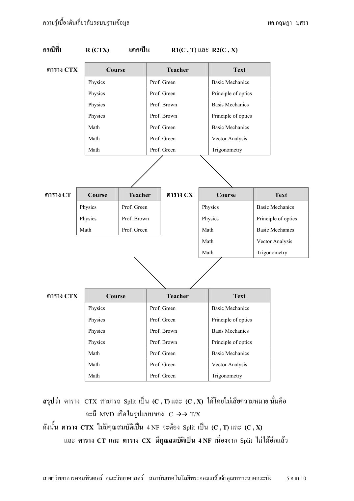
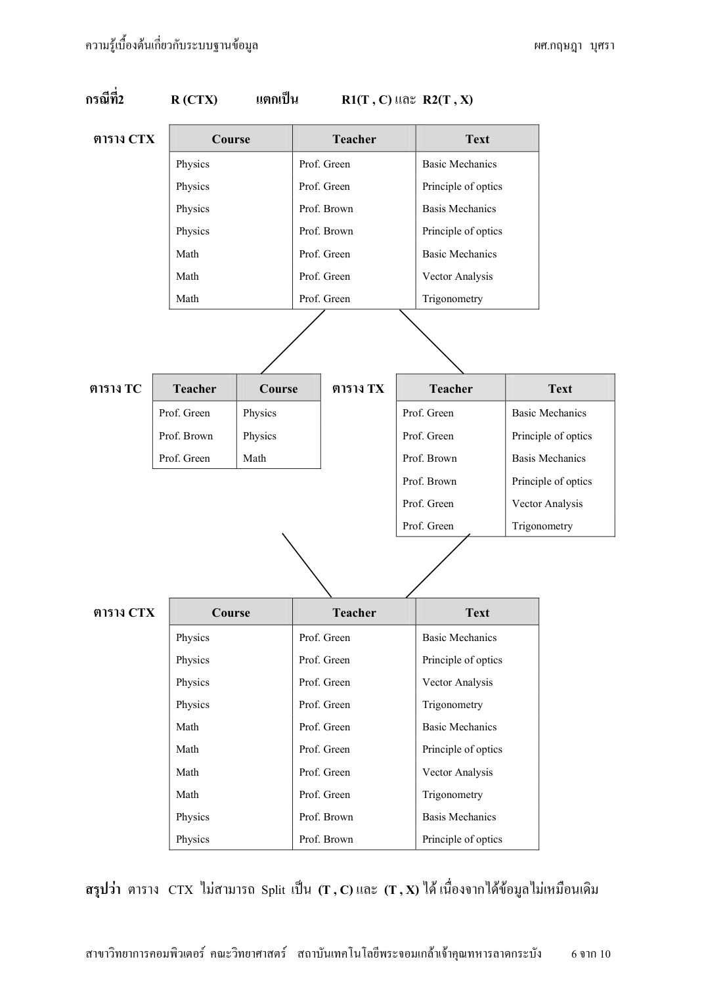
🎬 วิดีโอต้นฉบับ: Live 0023 [4NF]
🏋️ โจทย์ฝึกจริงของอาจารย์ (Live 0025): ตาราง Employee-Skill-Project
อาจารย์ยกโจทย์นี้ให้ผู้เรียนลองตอบ — "ตารางนี้อยู่ใน 4NF หรือไม่? ถ้าไม่ จง Split"
| Employee 🔑 | Skill 🔑 | Project 🔑 |
|---|---|---|
| ลุมฟา | M.Word | การวิจัยตลาด |
| ลุมฟา | M.Excel | การวิจัยตลาด |
| เนตรนภา | M.Excel | การวิจัยตลาด |
| เนตรนภา | M.Excel | MIS |
| เนตรนภา | MySQL | การวิจัยตลาด |
| เนตรนภา | MySQL | MIS |
🧠 เฉลยละเอียดทีละขั้น (ตามสูตร 4NF) — โจทย์: ตารางนี้อยู่ใน 4NF หรือไม่?
ขั้นที่ 1: นับข้อมูลจริงของแต่ละคน — แยกเป็น 2 กลุ่มที่ไม่เกี่ยวกัน
- ลุมฟา → Skill = {M.Word, M.Excel} (2 อย่าง) • Project = {การวิจัยตลาด} (1 อัน)
- เนตรนภา → Skill = {M.Excel, MySQL} (2 อย่าง) • Project = {การวิจัยตลาด, MIS} (2 อัน)
ขั้นที่ 2: ตรวจว่า Skill กับ Project "ผูกกัน" หรือ "อิสระกัน"
ดูเนตรนภาในตาราง — M.Excel ปรากฏกับ ทั้ง การวิจัยตลาด และ MIS • MySQL ก็ปรากฏกับ ทั้งสองโปรเจกต์เช่นกัน แปลว่าไม่มีกฎว่า "ทักษะนี้ใช้กับโปรเจกต์นี้เท่านั้น" — ทักษะกับโปรเจกต์จับคู่กันได้ทุกแบบ = อิสระกันโดยสิ้นเชิง
ขั้นที่ 3: เพราะอิสระกัน → เกิด MVD และตารางต้องเก็บ "ผลคูณทุกคู่"
Employee →→ Skill (คนหนึ่งมีหลายทักษะ) และ Employee →→ Project (คนหนึ่งทำหลายโปรเจกต์)
เพราะสองอย่างอิสระกัน ตาราง 3 คอลัมน์นี้ต้องเก็บครบทุกคู่ที่จับกันได้:
- เนตรนภา: 2 ทักษะ × 2 โปรเจกต์ = 4 แถว (M.Excel×การวิจัยตลาด, M.Excel×MIS, MySQL×การวิจัยตลาด, MySQL×MIS)
- ลุมฟา: 2 ทักษะ × 1 โปรเจกต์ = 2 แถว
- รวม 4 + 2 = 6 แถว = ตรงกับตารางโจทย์เป๊ะ — พิสูจน์แล้วว่าเป็น MVD จริง
ขั้นที่ 4: ทดสอบ "ความบวมของแถว" — จุดที่ทำให้ 4NF ห้าม
- เนตรนภาเรียนเพิ่ม Python (1 อย่าง) → ต้องเพิ่ม 2 แถว: (เนตรนภา, Python, การวิจัยตลาด) + (เนตรนภา, Python, MIS) — เพราะถ้าใส่แถวเดียว เราจะไม่รู้ว่า Python ใช้กับอีกโปรเจกต์ด้วยหรือไม่
- เธอได้โปรเจกต์ใหม่ 1 อัน → ต้องเพิ่มอีก 2 แถว (ต่อ Skill ทุกอย่างที่มีอยู่)
→ ข้อมูลเพิ่ม 1 ชิ้นแต่ตารางบวมหลายแถว = ไม่ผ่าน 4NF ❌
ขั้นที่ 5: Split — แยก 2 กลุ่มที่อิสระกันออกจากกัน (แต่ละตารางเก็บ MVD เดียว)
ตารางที่ 1: Employee_Skill — ตัด Project ทิ้ง เหลือแค่ "ใครมีทักษะอะไร" (4 แถว)
| Employee 🔑 | Skill 🔑 |
|---|---|
| ลุมฟา | M.Word |
| ลุมฟา | M.Excel |
| เนตรนภา | M.Excel |
| เนตรนภา | MySQL |
ตารางที่ 2: Employee_Project — ตัด Skill ทิ้ง เหลือแค่ "ใครทำโปรเจกต์ไหน" (3 แถว)
| Employee 🔑 | Project 🔑 |
|---|---|
| ลุมฟา | การวิจัยตลาด |
| เนตรนภา | การวิจัยตลาด |
| เนตรนภา | MIS |
ขั้นที่ 6: พิสูจน์ Lossless — JOIN กลับบน Employee
ลุมฟา: 2 Skill × 1 Project = 2 แถว • เนตรนภา: 2 Skill × 2 Project = 4 แถว → รวม 6 แถว = ตรงตารางเดิมเป๊ะ ✅
ทดสอบซ้ำด้วยสถานการณ์เดิม: เนตรนภาเรียน Python เพิ่ม → เพิ่มแถวเดียว (เนตรนภา, Python) ใน Employee_Skill พอ — ไม่ต้องแตะ Employee_Project เลย ✅
สรุปบรรทัดเดียว: ข้อมูล 2 กลุ่มที่ "หลายค่า + อิสระกัน" (Skill กับ Project ไม่เกี่ยวกัน) ต้องแยกตาราง — นี่คือสาระของ 4NF
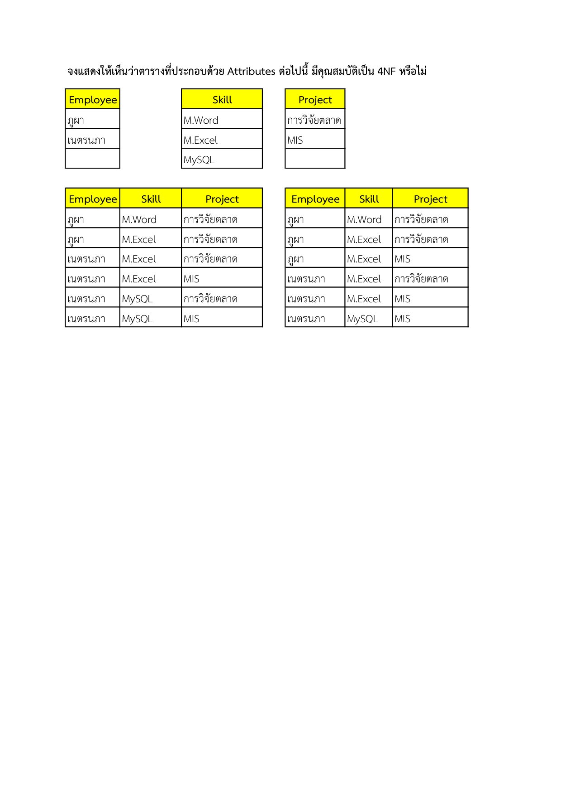
🟣 5NF — ตัวอย่างอาจารย์ (Live 0025): Join Dependency สามเส้า
5NF (PJNF) = 4NF + ไม่มี Join Dependency (JD) ที่ไม่จำเป็น — ตารางต้องไม่สามารถแตกเป็น n ตารางย่อย (n ≥ 3) แล้ว JOIN กลับมาได้ตารางเดิม 100% เว้นแต่การแตกนั้น lossless จริง ๆ
ความสัมพันธ์สามเส้า (Ternary): ใคร (Supplier) ส่งชิ้นส่วนอะไร (Part) ให้โครงการไหน (Project)
— เกิด JD: *((Supplier, Part), (Part, Project), (Supplier, Project))
📖 ศัพท์: JD (Join Dependency) — อ่านว่า "เจดี (การขึ้นกันแบบเชื่อมโยง)"
ความหมาย: ความสัมพันธ์ "สามเส้า" ที่ต้องแตกครบทั้ง 3 คู่ (A,B), (B,C), (A,C) แล้ว JOIN กลับพร้อมกันถึงจะได้ตารางเดิม — นี่คือสิ่งที่ 5NF จัดการ (5NF จึงถูกเรียกอีกชื่อว่า PJNF = Project-Join NF)
ตัวอย่างจากตาราง SupplyPart: SPJ: ต้องเก็บครบ (Supplier,Part), (Part,Project), (Supplier,Project) — ขาดคู่ใด JOIN กลับไม่ครบ
📉 ตารางก่อนแปลง (ผ่าน 4NF แล้ว — แต่ยังแตก 5NF ได้)
| Supplier 🔑 | Part 🔑 | Project 🔑 |
|---|---|---|
| S1 | P1 | J1 |
| S1 | P1 | J2 |
| S1 | P2 | J1 |
| S2 | P1 | J1 |
ขั้นที่ 1: ลองแตกแบบ "ธรรมดา" ก่อน — แบ่งเป็น 2 ตาราง (เหมือนที่ทำใน 4NF)
แตก SPJ เป็น SP(Supplier, Part) กับ PJ(Part, Project):
| SP — ใครส่งอะไร | PJ — อะไรใช้ในโปรเจกต์ไหน | ||
|---|---|---|---|
| Supplier 🔑 | Part 🔑 | Part 🔑 | Project 🔑 |
| S1 | P1 | P1 | J1 |
| S1 | P2 | P1 | J2 |
| S2 | P1 | P2 | J1 |
จากนั้น JOIN SP ⋈ PJ กลับ (จับคู่ทุกแถวที่ Part เท่ากัน) — ไล่ทีละคู่ให้เห็นชัด:
| จับคู่จาก SP | กับจาก PJ | ได้แถวใหม่ | ตรวจกับตารางเดิม |
|---|---|---|---|
| (S1, P1) | (P1, J1) | S1, P1, J1 | มีจริง ✓ |
| (S1, P1) | (P1, J2) | S1, P1, J2 | มีจริง ✓ |
| (S1, P2) | (P2, J1) | S1, P2, J1 | มีจริง ✓ |
| (S2, P1) | (P1, J1) | S2, P1, J1 | มีจริง ✓ |
| (S2, P1) | (P1, J2) | S2, P1, J2 | ไม่มีในตารางเดิม! ❌ Spurious Tuple |
ผล JOIN = 5 แถว (เดิมมีแค่ 4!) — เกิดแถวหลอก (S2, P1, J2) เพราะ (S2, P1) จาก SP ไปจับกับ (P1, J2) จาก PJ ทั้งที่ข้อมูลจริงไม่เคยมี S2 ส่ง P1 ให้ J2 — ถ้าเอาตารางนี้ไปใช้จริง เราจะเข้าใจผิดว่า S2 ส่งของให้โปรเจกต์ J2 ด้วย! นี่คือเหตุผลที่ "แตก 2 ตาราง" ยังไม่พอ
ขั้นที่ 2: เพิ่มตารางที่ 3 เข้ามา — แถวหลอกถูก "กรองทิ้ง" อัตโนมัติ
แตกเพิ่มอีกตาราง: SJ(Supplier, Project):
| Supplier 🔑 | Project 🔑 |
|---|---|
| S1 | J1 |
| S1 | J2 |
| S2 | J1 |
เมื่อ JOIN ครบทั้ง 3 ตาราง แถวหลอก (S2, P1, J2) จะรอดไม่ได้ — เพราะแถวนี้บอกว่า "S2 ทำโปรเจกต์ J2" แต่ใน SJ ไม่มีคู่ (S2, J2) เลย → ตอน JOIN กับ SJ แถวหลอกจับคู่ไม่ได้ จึงถูกตัดทิ้ง → เหลือ 4 แถว = ตรงกับตารางเดิมเป๊ะ ✅ (Lossless Join)
📈 ตารางหลังแปลง (5NF) — แตกครบทั้ง 3 คู่
ตารางที่ 1: Supplier_Part — ใครส่งอะไร (จากตารางเดิม เอาเฉพาะ 2 คอลัมน์แรก + ตัดซ้ำ)
| Supplier 🔑 | Part 🔑 |
|---|---|
| S1 | P1 |
| S1 | P2 |
| S2 | P1 |
ตารางที่ 2: Part_Project — อะไรใช้ในโปรเจกต์ไหน
| Part 🔑 | Project 🔑 |
|---|---|
| P1 | J1 |
| P1 | J2 |
| P2 | J1 |
ตารางที่ 3: Supplier_Project — ใครรับผิดชอบโปรเจกต์ไหน
| Supplier 🔑 | Project 🔑 |
|---|---|
| S1 | J1 |
| S1 | J2 |
| S2 | J1 |
ขั้นที่ 3: ทำไมต้องเก็บครบทั้ง 3 คู่ — เพราะข้อมูล 3 อย่างนี้ "ผูกกัน" ในโลกจริง
ต่างจาก 4NF (Skill กับ Project อิสระกัน แยกได้เลย) — ข้อมูล SPJ มีกฎธุรกิจเชื่อมกันทั้งสาม:
- ถ้า S ส่ง Part P (มีใน Supplier_Part)
- และ Part P ถูกใช้ใน Project J (มีใน Part_Project)
- และ S รับผิดชอบ Project J (มีใน Supplier_Project)
- → กฎธุรกิจบังคับว่า S ต้องส่ง P ให้ J เสมอ — ขาดเงื่อนไขข้อใดข้อหนึ่งไป สรุปไม่ได้เลยว่า "ใครส่งอะไรให้ใคร"
เพราะข้อมูลทั้ง 3 ผูกกันหมด จึงแยกเป็น 2 กลุ่มอิสระไม่ได้ (ต่างจาก 4NF ที่แยกได้ทันที)
— ต้องเก็บครบทั้ง 3 คู่ นี่คือ Join Dependency: *((Supplier, Part), (Part, Project), (Supplier, Project))
— และแถวหลอก (S2, P1, J2) ข้างบนก็คือข้อมูลที่ละเมิดกฎนี้ (S2 ไม่ได้ทำ J2 แต่ JOIN 2 ตารางบังคับให้มันโผล่)
🧠 จำสั้น ๆ: 4NF vs 5NF
4NF: ข้อมูล 2 กลุ่ม "อิสระกันจริง ๆ" (Skill ไม่เกี่ยว Project) → แยก 2 ตาราง จบ
5NF: ข้อมูล 3 อย่าง "ผูกกันด้วยกฎ" → แตกได้ แต่ต้องแตกครบทั้ง 3 คู่ — แตก 2 คู่จะเกิดแถวหลอกทันที
📖 ศัพท์: Spurious Tuple — อ่านว่า "สเปียเรียส ทูเพิล (แถวหลอก)"
ความหมาย: แถวข้อมูลปลอมที่โผล่มาหลัง JOIN ตารางที่แตกไม่ถูกวิธี — เป็นข้อมูลที่ไม่เคยมีอยู่จริง แต่ปรากฏในผลลัพธ์ อันตรายมากเพราะดูไม่ออก
ตัวอย่างจากตาราง SupplyPart: (S2, P1, J2) — ไม่เคยมี S2 ส่ง P1 ให้ J2 แต่แถวนี้โผล่มาหลัง JOIN แค่ 2 ตาราง
📖 ศัพท์: Lossless Join — อ่านว่า "ลอสเลส จอยน์ (การรวมกลับแบบไม่สูญเสีย)"
ความหมาย: การแตกตารางที่ "JOIN กลับแล้วได้ข้อมูลเดิมครบ 100%" — ไม่หาย ไม่เกิน — ทุกการสปลิตใน Normalization ต้อง lossless เสมอ ถ้าแตกแล้วเกิดแถวหลอก = แตกผิด
ตัวอย่างจากตาราง SupplyPart: การแตก 2NF/3NF ทั้งหมดในหน้านี้ lossless — ส่วนการแตก 5NF ต้องแตกครบ 3 คู่จึงจะ lossless
🔍 เปรียบเทียบ: 4NF vs 5NF
4NF = จับคู่สองเส้าที่อิสระกัน → แยกเป็น 2 ตาราง จบ
5NF = สามเส้า ที่แยกแล้ว JOIN กลับไม่ครบถ้าขาดคู่ใดคู่หนึ่ง → ต้องแตกครบทั้ง 3 คู่พร้อมกัน
เหมือนจับคู่เดท 3 เส้า ที่รู้แค่ "A ชอบ B" กับ "B ชอบ C" ไม่พอ ต้องรู้ "A ชอบ C" ด้วยถึงจะสรุปถูก
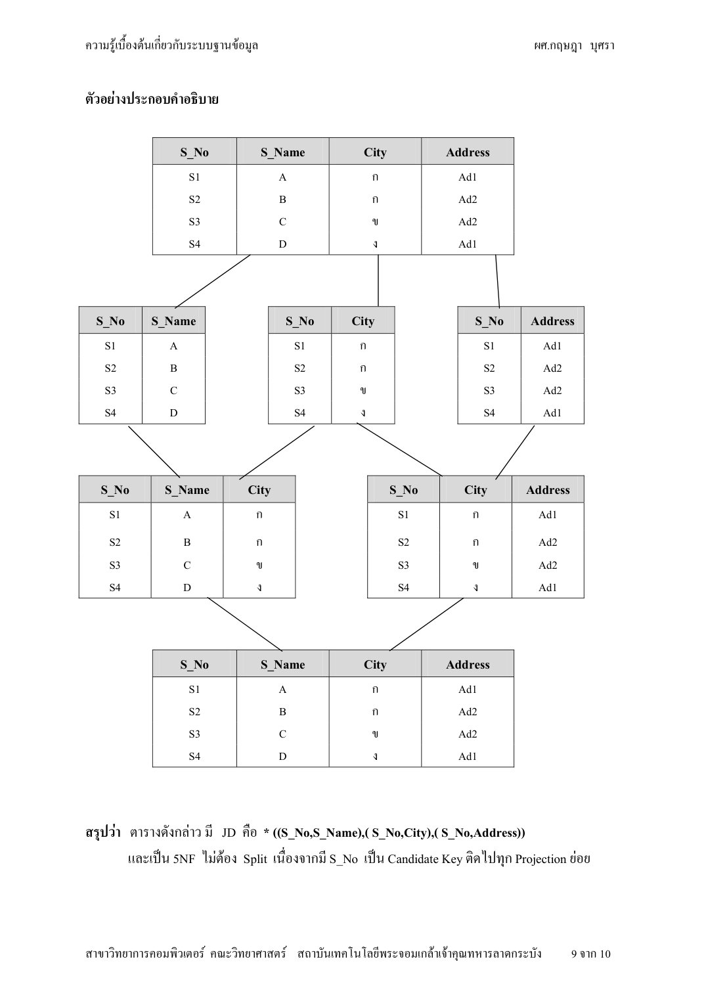
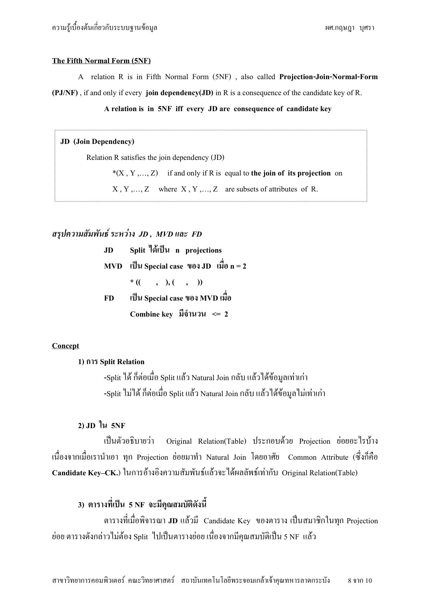
🎬 วิดีโอต้นฉบับ: Live 0025 [5NF] • ทบทวนรวม: Live 0024 Review 1NF-4NF
📂 ใบงาน / โจทย์แบบฝึกหัดจริงของอาจารย์ (NF)
ชุดเอกสารที่อาจารย์ใช้เป็น Workshop และแบบฝึกหัดในคลาส — แนวเดียวกับข้อสอบ

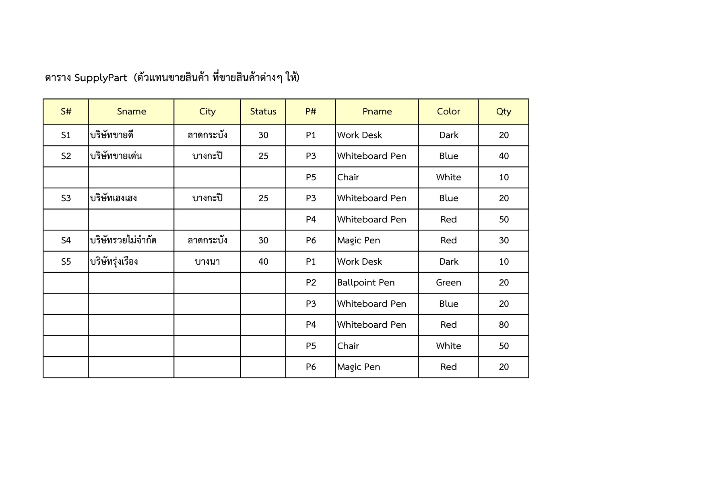
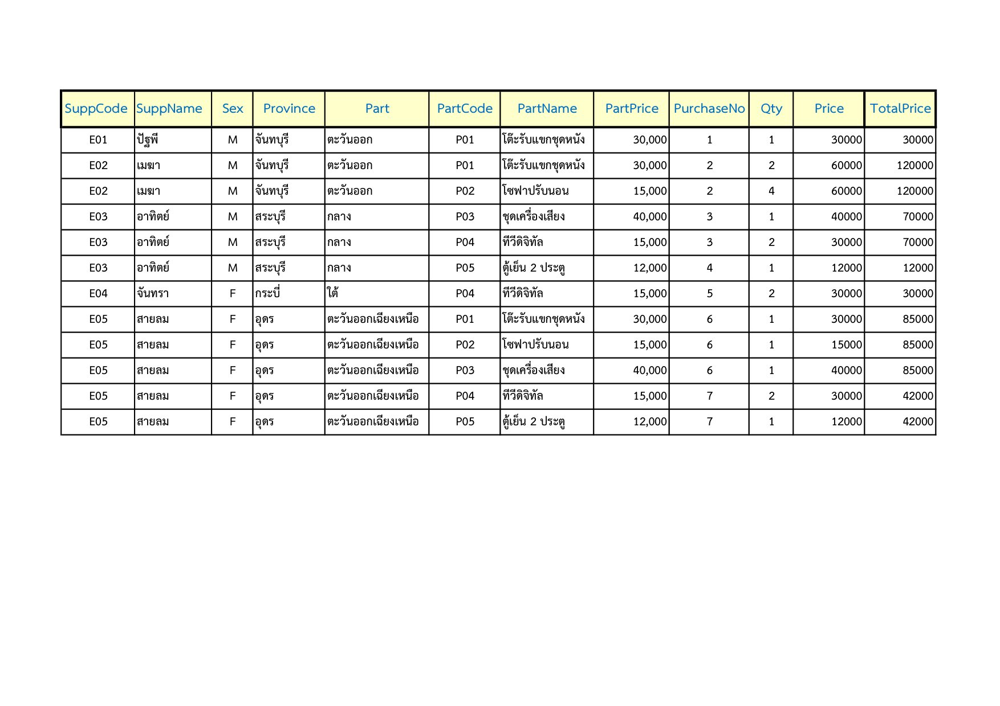
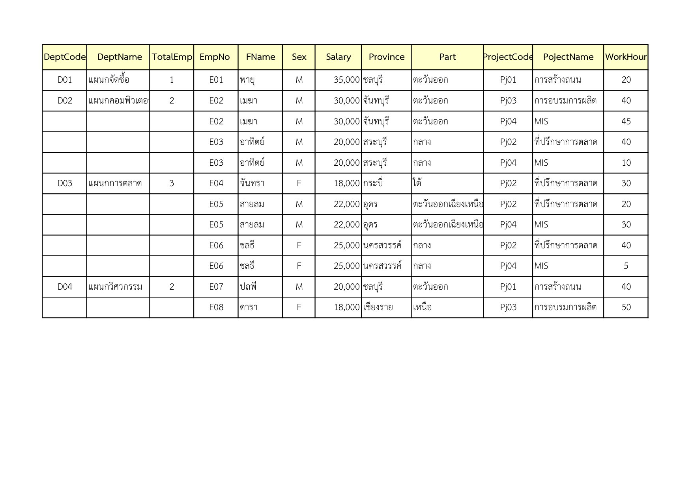
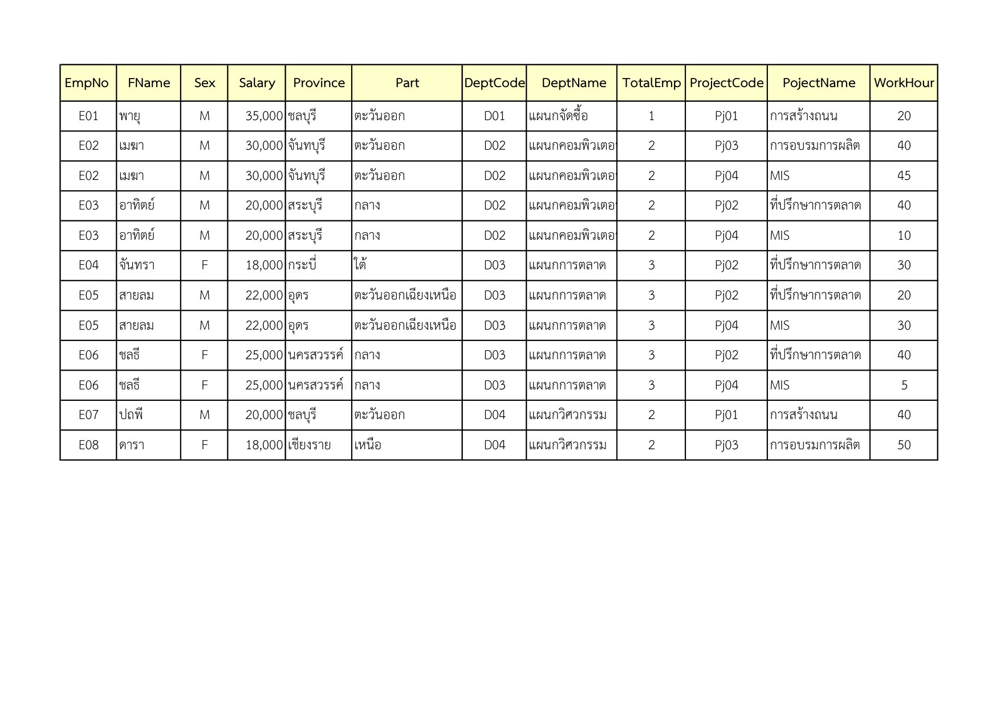
✅ เช็คลิสต์เดินข้อสอบ (ท่องติดตัว)
- 1NF — ทุกเซลล์ Atomic หรือยัง?
มีช่องเก็บหลายค่า / กลุ่มซ้ำ / ช่องว่างลอย? → เติมข้อมูลซ้ำให้เต็ม แยกแถวละ 1 ค่า แล้วกำหนด PK (มักเป็นคีย์ผสม)
- 2NF — PK เป็นคีย์ผสมไหม? มี Partial ไหม?
ถามทีละ Non-key: "รู้แค่ส่วนเดียวของ PK ก็รู้ค่านี้ไหม?" ใช่ → สปลิตตาม Determinant (คอลัมน์ที่ขึ้นกับส่วนไหน ไปอยู่ตารางของส่วนนั้น)
- 3NF — มี Non-key กำหนด Non-key ไหม?
หาสายโซ่ X → Y → Z โดย X = PK, Y/Z = Non-key → ดึง Y+Z ออกไปตั้งตารางใหม่ (Y เป็น PK ใหม่, Z ย้ายตาม, X เหลือ FK ชี้ Y)
- BCNF — Determinant ทุกตัวเป็น CK ไหม?
ลิสต์ FD ทั้งหมด + CK ทั้งหมด เจอ FD ที่ฝั่งซ้ายไม่ใช่ CK → แยกตารางให้มัน (ฝั่งซ้ายกลายเป็น PK ใหม่)
- 4NF — มีข้อมูล 2 กลุ่มอิสระกันแต่หลายค่าไหม?
X →→ Y และ X →→ Z โดย Y⊥Z → แยก 2 ตาราง (เห็น "ผลคูณจับคู่ครบทุกแถว" = สัญญาณ MVD)
- 5NF — เป็นความสัมพันธ์ 3 เส้าไหม?
แตกครบ 3 คู่: (A,B) (B,C) (A,C) — แตก 2 ตารางจะเกิด Spurious Tuples
📝 โจทย์ฝึกเพิ่ม — เดินให้คล่องก่อนสอบ
โจทย์ที่ 1 (2NF+3NF): ตาราง ENROLL(Std_ID, Std_Name, Course_ID, Course_Name, Grade) PK=(Std_ID, Course_ID) — จงทำ 3NF
1NF: ทุกเซลล์ Atomic อยู่แล้ว ✅
2NF — ตรวจ Partial: ถาม "รู้แค่ Std_ID รู้ไหม?" → Std_Name ใช่ ❌ / "รู้แค่ Course_ID?" → Course_Name ใช่ ❌ / Grade ต้องรู้ทั้งคู่ ✅ FFD
สปลิต: Student(Std_ID*, Std_Name), Course(Course_ID*, Course_Name), Enroll(Std_ID*, Course_ID*, Grade)
3NF: ไม่มี Non-key กำหนด Non-key (ชื่อนักศึกษาขึ้นกับรหัสโดยตรง) ✅ ผ่าน 3NF — จบ 3 ตาราง
โจทย์ที่ 2 (เดินเต็มสเต็ป แบบข้อสอบ): ใบสั่งซื้อ ORDER(Order_ID, Order_Date, Cust_ID, Cust_Name, Cust_Phone, Prod_ID, Prod_Name, Unit_Price, Qty) PK=(Order_ID, Prod_ID) — จงทำ 3NF
วิเคราะห์ FD:
(Order_ID, Prod_ID) → Qty✅ FFDOrder_ID → Order_Date, Cust_ID❌ Partial (รู้เลขออเดอร์ก็รู้)Prod_ID → Prod_Name, Unit_Price❌ Partial (รู้รหัสสินค้าก็รู้)Cust_ID → Cust_Name, Cust_Phone⚠️ (จะกลายเป็น Transitive ในขั้นถัดไป)
2NF — สปลิต Partial: Order_Hdr(Order_ID*, Order_Date, Cust_ID, Cust_Name, Cust_Phone),
Product(Prod_ID*, Prod_Name, Unit_Price), Order_Item(Order_ID*, Prod_ID*, Qty)
3NF — ตัด Transitive ใน Order_Hdr: พบสายโซ่ Order_ID → Cust_ID → Cust_Name, Cust_Phone
แยก: Customer(Cust_ID*, Cust_Name, Cust_Phone) และเหลือ Orders(Order_ID*, Order_Date, Cust_ID→FK)
คำตอบ 4 ตาราง: Customer, Product, Orders, Order_Item — โครงเดียวกับตัวอย่าง SupplyPart ของอาจารย์ทุกประการ!
โจทย์ที่ 3 (BCNF): Enroll2(Std_ID, Course, Instructor) โดยอาจารย์ 1 คนสอนวิชาเดียว (Instructor → Course) PK=(Std_ID, Course) — ผ่าน 3NF แต่จงทำ BCNF
CK: (Std_ID, Course) และ (Std_ID, Instructor) — โครงเดียวกับตัวอย่าง Advisor
ปัญหา: Instructor → Course ฝั่งซ้ายไม่ใช่ CK ❌
แก้: Instructor_Course(Instructor*, Course) + Enroll_Std(Std_ID*, Instructor*)
— ตอนนี้ Determinant ทุกตัวเป็น PK ของตารางตัวเอง ✅ ผ่าน BCNF
โจทย์ที่ 4 (4NF): Student(Student_ID, Hobby, Language) นักศึกษามีงานอดิเรกหลายอย่างและพูดได้หลายภาษา โดยสองอย่างนี้ไม่เกี่ยวกัน — จงทำ 4NF
เกิด MVD: Student_ID →→ Hobby และ Student_ID →→ Language (อิสระกัน → ตารางเป็นผลคูณทุกคู่)
แก้: Student_Hobby(Student_ID*, Hobby*) + Student_Lang(Student_ID*, Language*)
สังเกตโครงเดียวกับ CTX(Course, Teacher, Text_Book) และโจทย์ ลุมฟา/เนตรนภา ของอาจารย์
โจทย์ที่ 5 (คิดตาม): ตาราง R(A, B, C, D) มี FD: AB→C, C→D, C→B — PK=(A,B) — ผ่าน 2NF/3NF หรือไม่ และแก้อย่างไรถึง BCNF
2NF: Partial = FD ที่ขึ้นกับ A เดี่ยวหรือ B เดี่ยว — ไม่มี (ทุก FD ต้องมี B หรือเป็น AB) ✅ ผ่าน 2NF
3NF: พบสายโซ่ AB → C → D (C, D เป็น Non-key ทั้งคู่) ❌ → สปลิต: R1(A*, B*, C) + R2(C*, D)
ตรวจ R1 ต่อ: C → B โดย B เป็นส่วนหนึ่งของ PK (prime attribute) → ยังผ่าน 3NF
แต่ BCNF ไม่ผ่าน (C ไม่ใช่ CK) → แก้ BCNF: แยก R3(C*, B) ออก เหลือ R4(A*, C)
🎬 แบบทดสอบด่วน
Q1ในตัวอย่าง SupplyPart ของอาจารย์ ข้อใดคือ Partial Dependency?
เฉลย ข้อ 2 — Sname/City/Status รู้ได้จาก S# เพียงอย่างเดียว ซึ่งเป็น "ส่วนเดียว" ของ PK ผสม (S#, P#) = Partial ❌ (ข้อ 1 คือ FFD ✅ ข้อ 3 คือ Transitive ข้อ 4 ไม่จริง เพราะ P# เดี่ยว ๆ รู้ Qty ไม่ได้)
Q2ในขั้น 3NF ของตัวอย่าง SupplyPart อาจารย์สปลิต S_2NF เพราะเหตุใด?
เฉลย ข้อ 3 — City (Non-key) กำหนด Status (Non-key) ได้ (London=20, Paris=10, Athens=30 เสมอ) เกิดสายโซ่ผ่าน Non-key จึงดึง City_Status(City, Status) ออกไป (ข้อ 1 คือปัญหา 2NF ที่แก้ไปแล้ว)
Q3ตาราง CTX (Physics × 2 อาจารย์ × 2 หนังสือ = 4 แถว) ผ่าน BCNF แล้วแต่ยังเก็บผลคูณจับคู่ครบทุกแถว — ขาด NF ไหน?
เฉลย ข้อ 1 — ข้อมูล 2 กลุ่มที่หลายค่าและอิสระกันโดยสิ้นเชิง = Multi-valued Dependency แก้ด้วยการแยก Course_Teacher กับ Course_Book (4NF)